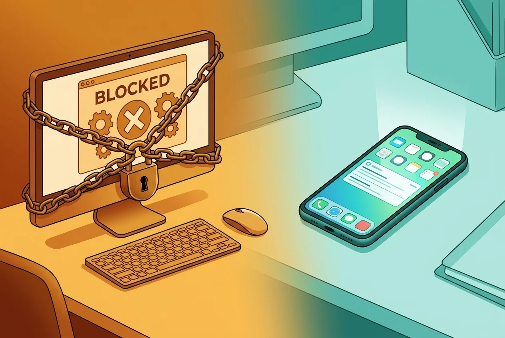

Cold Turkey Blocker Review: Is the 'Nuclear Option' Worth It?
The strictest distraction blocker money can buy. But locking yourself out of your own computer might not be the flex you think it is.
You've tried everything. You deleted the Reddit bookmark. You turned on Screen Time. You even put your phone in another room. And yet here you are, thirty-seven browser tabs deep in a Wikipedia spiral about extinct dog breeds, with a deadline screaming at you from across the desk.
Your eyes are glazed. Your coffee is cold. That document hasn't gained a single word in ninety minutes.
So you Google "website blocker that actually works" and every thread points to the same answer: Cold Turkey Blocker. The app that locks you out so hard that restarting your computer won't save you. People call it the nuclear option for a reason.
Cold Turkey Blocker is a desktop-only distraction blocker for Windows and macOS that operates at the OS level — not just inside your browser. It can block websites, desktop applications, and in its most extreme mode, your entire computer. It is the strictest consumer-grade blocker on the market, and it has a loyal following among people who have failed with every softer alternative.
But is the nuclear option actually the right call? Let's break it down.
What Cold Turkey Actually Does
Most app blockers work inside the browser. Cold Turkey goes deeper. When you activate a block, it enforces at the operating system level: blocked websites show a Cold Turkey page in any browser, and blocked applications get force-closed the instant you try to open them.
The cleverness is in the anti-circumvention. During an active block, Cold Turkey blocks access to your system clock settings so you can't fast-forward past the timer. It blocks Task Manager windows so you can't kill the process. It blocks its own uninstaller. Restart your computer and the block resumes on boot. On Windows especially, it is nearly impossible to get around.
You can set up blacklists (block specific sites), whitelists (block everything except a few allowed sites), scheduled blocks that activate automatically on weekdays, and daily allowances that give you a time budget — say, 20 minutes of Reddit per day — before the block kicks back in.
Frozen Turkey: The Nuclear Option
This is the feature that made Cold Turkey famous on Reddit. Frozen Turkey doesn't just block websites or apps — it locks you out of your entire computer. Activate it, and your screen locks. Try to log back in and it locks again immediately. You cannot use your machine until the timer expires.
There is no override. No emergency unlock. No "I changed my mind."
For some people, this is exactly what they need. If you're the type who will find any loophole, disable any blocker, and rationalize any exception, Frozen Turkey removes the negotiation entirely. Your future self literally cannot cheat. That's the appeal.
The danger is obvious. Set a Frozen Turkey block for 8 hours and realize you need to send one urgent email? Tough luck. Misjudge your schedule and lock yourself out during a meeting? That's on you. Power users on forums warn new users to start with 30-minute Frozen Turkey sessions before committing to anything longer.
Free vs. Pro: What You Actually Get
Cold Turkey's free version blocks websites only — no app blocking, no scheduling, no locked blocks. It's functional enough to test whether OS-level blocking works for your workflow.
Cold Turkey Pro costs $39 one-time — no subscription, lifetime updates — and unlocks everything: app blocking, scheduled blocks, Pomodoro timer, daily allowances, Frozen Turkey, whitelist mode, and locked blocks that genuinely cannot be cancelled.
The one-time pricing is a genuine differentiator. Competitors like Freedom charge $8.99/month or $160 lifetime. FocusMe runs $7.95/month. If you know you want a strict desktop blocker long-term, Cold Turkey's price-to-value ratio is hard to beat.
Where Cold Turkey Falls Short

No mobile app. This is the elephant in the room. Cold Turkey is desktop-only. If your doomscrolling problem lives on your phone — and for most people under 35, it does — Cold Turkey won't help. You'll block Reddit on your laptop and open it on your phone thirty seconds later. The developer has said mobile OS restrictions make their approach impossible on iOS and Android.
macOS is the weaker platform. The Windows version is bulletproof. The Mac version has known reliability issues — website blocking can be delayed, and technically savvy users have found terminal-based workarounds. If you're on Mac, temper your expectations.
The strictness is a double-edged sword. Lock a block with the wrong settings and you're stuck until the timer expires. There's no "I made a mistake" escape hatch. For people who need flexibility — parents who might get an emergency call, remote workers whose schedules shift — this rigidity can backfire badly.
Punishment psychology. Cold Turkey's philosophy is fundamentally about restriction. It assumes the only way to fix your behavior is to make the bad thing impossible. For some people that works. But research on implementation intentions suggests that building intentional friction — a pause that redirects your behavior rather than blocking it outright — produces more sustainable habit change than pure lockouts.
The Gentler Alternative: Sip & Scroll
If Cold Turkey is the drill sergeant, Sip & Scroll is the mindfulness coach. Instead of locking you out, it introduces a moment of intentional friction before you open distracting apps on your iPhone.
Here's how it works: you select the apps you want to manage — TikTok, Instagram, YouTube, whatever pulls you in. When you try to open one, Sip & Scroll pauses you with a gentle prompt: take a sip of water and snap a quick selfie proving it. After that, you get up to 45 minutes of unblocked access. Session ends, take another sip or walk away.
No lockouts. No punishment. No "guess I can't use my device for the next four hours." Just a small ritual that turns a mindless habit into a conscious choice — and keeps you hydrated while you're at it.
The selfie verification prevents the "just tap past it" problem that plagues gentler blockers. And the 45-minute session model creates natural stopping points that Cold Turkey's all-or-nothing approach doesn't offer.
Best for: iPhone users who want to reduce short-form video consumption without the anxiety of hard lockouts. People who've tried strict blockers and ended up uninstalling them within a week.
The Verdict: Who Should Use What?
Choose Cold Turkey if: your distraction problem is primarily on desktop, you're on Windows, you've tried softer blockers and circumvented all of them, and you genuinely need an app that makes cheating physically impossible. The $39 one-time price is excellent value.
Choose Sip & Scroll if: your distraction problem lives on your phone, you want behavior change that doesn't feel like punishment, and you'd rather build a sustainable ritual than white-knuckle through a lockout. It's free to download with a premium option for unlimited app blocking.
Use both if: you need desktop and mobile coverage. Cold Turkey handles the laptop, Sip & Scroll handles the phone. They complement each other well — one enforces hard boundaries where you need them, the other builds intentional habits where flexibility matters more.
The real question isn't "which blocker is strictest?" It's "what kind of relationship do you want with your devices?" If you want a warden, Cold Turkey delivers. If you want a partner in building something healthier, that's a different tool entirely.
Ready for friction that doesn't feel like punishment?
Pause addictive apps with a sip of water. Stay hydrated, stay present.
Download Sip & Scroll